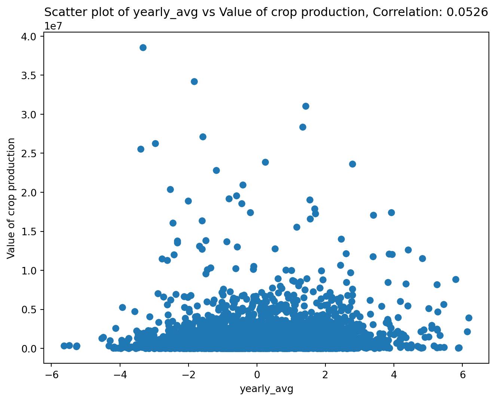

Code
import pandas as pd
import requestsHere is an example of how the functions in our package can work together.
import pandas as pd
import requestsWe start by using our functions to scrape the data, and save it to a csv.
# remember txt_to_csv is called in read_url_txt
from farm_precip_project import read_url_txt
url = "https://www.ncei.noaa.gov/pub/data/cirs/drd/drd964x.pdsi.txt"
#picking names for files to save. both a txt and a csv
txt_name = "rain.txt"
csv_name = "rain_dirty.csv"
# colspecs and cols is formatting specific to this file
#the first col of the txt contains several pieces of information in a string
colspecs = [
(0, 2), (2, 4), (4, 6), (6, 10),
(10, 17), (17, 24), (24, 31), (31, 38),
(38, 45), (45, 52), (52, 59), (59, 66),
(66, 73), (73, 80), (80, 87), (87, 94)
]
cols = [
"state", "division", "element", "year",
"jan","feb","mar","apr","may","jun","jul","aug",
"sep","oct","nov","dec"
]
read_url_txt(url, txt_name, csv_name, colspecs, cols)
# The head of the data saved as a .csv
print(pd.read_csv(csv_name).head(1).to_markdown())| | state | division | element | year | jan | feb | mar | apr | may | jun | jul | aug | sep | oct | nov | dec |
|---:|--------:|-----------:|----------:|-------:|------:|------:|------:|------:|------:|------:|------:|------:|------:|------:|------:|------:|
| 0 | 1 | 1 | 5 | 1895 | 0.11 | -0.81 | -0.56 | -0.72 | -0.85 | -0.99 | -0.9 | -1.13 | -1.69 | -1.72 | -2.04 | -2.12 |We then calculate yearly averages for each state and save it in a new csv file. In this case we will read the csv created using read_url_txt and perform the calculations on it.
from farm_precip_project import normalized_data
months = ["jan","feb","mar",'apr',"may","jun","jul","aug","sep","oct","nov","dec"]
groups = ["state","year"]
new_col_name = "yearly_avg"
csv_name_clean = "rain_clean.csv"
df_to_read = "rain_dirty.csv"
normalized_data(df_to_read, new_col_name, csv_name_clean, months, groups)
print(pd.read_csv(csv_name).head(1).to_markdown())| | state | division | element | year | jan | feb | mar | apr | may | jun | jul | aug | sep | oct | nov | dec |
|---:|--------:|-----------:|----------:|-------:|------:|------:|------:|------:|------:|------:|------:|------:|------:|------:|------:|------:|
| 0 | 1 | 1 | 5 | 1895 | 0.11 | -0.81 | -0.56 | -0.72 | -0.85 | -0.99 | -0.9 | -1.13 | -1.69 | -1.72 | -2.04 | -2.12 |We now turn to the agricultural income data. These data were collected from publicly available USDA Economic Research Service (ERS) tables and provide yearly state-level measures of farm income.
The raw files contain multiple categories of income and expenses, along with metadata rows that are not useful for analysis. We first clean and reshape the data so that each row corresponds to a single state–year observation with a clearly defined income variable.
import pandas as pd
# read in the raw farm income data
farm_df = pd.read_csv("FarmIncome_full.csv")
# preview the structure of the data
print(farm_df.head(1).to_markdown())| | state | year | Value of crop production | Crop cash receipts | Cotton | Feed crops | Food grains | Fruits and nuts | Oil crops | Vegetables and melons | All other crops | Home consumption | Inventory adjustment |
|---:|--------:|-------:|---------------------------:|---------------------:|---------:|-------------:|--------------:|------------------:|------------:|------------------------:|------------------:|-------------------:|-----------------------:|
| 0 | 1 | 1949 | 250813 | 230275 | 150706 | 13405 | 231 | 4937 | 30196 | 14421 | 16238 | 39680 | -19142 |We inspect the data to verify that the dataset already contains state and year identifiers, allowing it to be merged directly with the cleaned PDSI data later in the workflow. The income variable of interest is the value of crop production, which we will use as our primary measure of agricultural output.
At this stage, no aggregation is needed, as the data are already recorded at the yearly level. The cleaned farm income file is therefore ready to be merged with the PDSI dataset using state and year as the grouping variables.
We then use merge_csvs to combine our farm and PDSI datasets into one csv.
from farm_precip_project import merge_csvs
import pandas as pd
csvs = ["FarmIncome_full.csv", "rain_clean.csv"]
group_on = ["state", "year"]
new_csv_name = "combined_farm_precip.csv"
merge_csvs(new_csv_name, csvs, group_on)
print(pd.read_csv(new_csv_name).head(1).to_markdown())| | state | year | Value of crop production | Crop cash receipts | Cotton | Feed crops | Food grains | Fruits and nuts | Oil crops | Vegetables and melons | All other crops | Home consumption | Inventory adjustment | yearly_avg |
|---:|--------:|-------:|---------------------------:|---------------------:|---------:|-------------:|--------------:|------------------:|------------:|------------------------:|------------------:|-------------------:|-----------------------:|-------------:|
| 0 | 1 | 1949 | 250813 | 230275 | 150706 | 13405 | 231 | 4937 | 30196 | 14421 | 16238 | 39680 | -19142 | 1.18625 |Before conducting formal analysis, we perform exploratory data analysis (EDA) to better understand the structure, scale, and potential issues within the merged dataset.
We begin by inspecting basic summaries of the key variables, including PDSI yearly averages and farm income values. This allows us to identify unusual values, missing observations, or potential data collection issues.
# basic summary statistics
df = pd.read_csv("combined_farm_precip.csv")
print(df[["yearly_avg", "Value of crop production"]].describe().to_markdown())| | yearly_avg | Value of crop production |
|:------|-------------:|---------------------------:|
| count | 3168 | 3168 |
| mean | -1.20492 | 1.47364e+06 |
| std | 11.3391 | 2.76964e+06 |
| min | -92.0538 | 565 |
| 25% | -0.947478 | 217579 |
| 50% | 0.125583 | 578921 |
| 75% | 1.23529 | 1.69268e+06 |
| max | 6.18639 | 4.02647e+07 |During this exploration, we discovered that the year 2014 contains extreme PDSI values across all states that are not consistent with surrounding years. These anomalies are likely due to errors in data collection or reporting rather than real climatic conditions.
To address this issue, we remove observations with unrealistic PDSI values using our remove_outliers function. This step ensures that subsequent analysis is not driven by spurious data points.
from farm_precip_project import remove_outliers
col_name = "yearly_avg"
threshold = -50
df = remove_outliers(df, col_name, threshold, lower=True)After removing these outliers, we re-examine the distributions and confirm that the remaining data follow plausible ranges. With these corrections applied, the dataset is now suitable for correlation analysis and visualization, which we perform in the following sections.
We now want to perform some analysis to better understand the relationship between income and PDSI values.
When performing EDA we discovered that the year 2014 had errors in their data collection that caused all states to have unrealistic values. So we will use our remove_outliers function to form a dataframe without the incorrect data.
from farm_precip_project import remove_outliers
import pandas as pd
df = pd.read_csv('combined_farm_precip.csv')
col_name = "yearly_avg"
threshold = -50
df = remove_outliers(df, col_name, threshold, lower = True)We now want to explore the relationship between the PDSI, and the agricultural income. So we will use corr_and_plot to produce a scatterplot of the two variable, and a correlation coefficient.
from farm_precip_project import corr_and_plot
import matplotlib.pyplot as plt
# the df is pulled from the above cell where we cleaned the incorrect values
colx = "yearly_avg"
coly = "Value of crop production"
plot_file = f"plot_{colx}_vs_{coly}.png"
n_digits = 4
corr_and_plot(df, colx, coly, plot_file,n_digits)
<Figure size 672x480 with 0 Axes>It appears there is not a correlation between farming income and the PDSI. This is due to different states having different average income levels. Thus we need to center the income for each state, as then we can focus on exploring the relationship between the change in income and change in PDSI. We will use center_column to do so.
from farm_precip_project import center_column
import pandas as pd
col_name = "yearly_avg"
col_group = "state"
col_stand_name = "income_centered"
df = center_column(df, col_name, col_group, col_stand_name)
print(df.head(5).to_markdown())| | state | year | Value of crop production | Crop cash receipts | Cotton | Feed crops | Food grains | Fruits and nuts | Oil crops | Vegetables and melons | All other crops | Home consumption | Inventory adjustment | yearly_avg | income_centered |
|---:|--------:|-------:|---------------------------:|---------------------:|---------:|-------------:|--------------:|------------------:|------------:|------------------------:|------------------:|-------------------:|-----------------------:|-------------:|------------------:|
| 0 | 1 | 1949 | 250813 | 230275 | 150706 | 13405 | 231 | 4937 | 30196 | 14421 | 16238 | 39680 | -19142 | 1.18625 | 1.07534 |
| 1 | 1 | 1950 | 267006 | 229713 | 130815 | 13510 | 245 | 4850 | 32003 | 12494 | 35796 | 39254 | -2143 | -0.492812 | -0.60372 |
| 2 | 1 | 1951 | 292913 | 264151 | 177427 | 14241 | 192 | 6245 | 23205 | 13414 | 29427 | 35748 | -7278 | -1.1524 | -1.2633 |
| 3 | 1 | 1952 | 298393 | 277208 | 189744 | 9517 | 268 | 5274 | 25783 | 20143 | 26479 | 49808 | -28897 | -1.60104 | -1.71195 |
| 4 | 1 | 1953 | 331899 | 263726 | 180347 | 9779 | 682 | 7388 | 24700 | 16534 | 24296 | 46457 | 21395 | -0.649375 | -0.760282 |Now we will once again use our corr_and_plot function to analyze the relationship.
from farm_precip_project import corr_and_plot
import matplotlib.pyplot as plt
colx = "yearly_avg"
coly = "income_centered"
plot_file = f"plot_{colx}_vs_{coly}.png"
n_digits = 4
corr_and_plot(df, colx, coly, plot_file,n_digits)
<Figure size 672x480 with 0 Axes>We now see an apparent linear relationship between the two variables. We now want to see if this is actually a group of lines where each line is a state. This would let us know if certain states are less affected by PDSI than other states. We can use make_scatter_w_cat to create a scatterplot that colors the points by category.
from farm_precip_project import make_scatter_w_cat
import seaborn as sns
colx = "yearly_avg"
coly = "income_centered"
colcat = "state"
plot_file = f"plot_{colx}_vs_{coly}_by_{colcat}.png"
make_scatter_w_cat(df, colx, coly, colcat, plot_file)
<Figure size 672x480 with 0 Axes>Through this plot we can see that each state appears to have a line of its points with a similar slope to each other state. The difference is the line’s interecept. This causes us to note that some states perform above their average income with an average PDSI while other perform below their average income with an average PDSI. It is a relationship that would be worth exploring in the future.